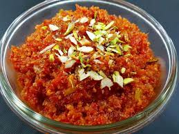

Gajar ka halwa

Description
Gajar ka halwa, also known as Gajrela, is a traditional North Indian dessert.
It's a sweet pudding made by simmering grated carrots with milk, sugar, ghee, and spices. The dish is then scented with cardamom powder and garnished with chopped nuts.
Ingredients
- 500 gm carrot
- 1/2 tin condensed milk
- 1/4 teaspoon cardamon powder
- 3/2 teaspoon ghee
- 1/4 cup chpped nuts
- 2 tablespoon raisins
Steps
- First rinse 650 grams carrots (8 to 9 medium-sized tender, juicy carrots or 6 to 7 long carrots) a few times in water.
- Next, grate the carrots with a box grater or in a food processor. You can measure the grated carrots with a standard measuring cup and you will need about 4 to 4.5 cups of grated carrots.
- In a heavy kadai or wok, add all of the grated carrots.
- Pour in 4 cups full-fat milk. Switch on the burner.
- Mix the grated carrots and milk together.
- Cook this mixture on a low-medium heat. After a few minutes, the milk will begin to froth and then start slowly reducing.
- Keep stirring this halwa mixture often, scraping the sides of the kadai to remove the evaporated milk solids. Stir the milk solids into the cooking mixture.
- Cook the carrot and milk mixture until the liquid is reduced by 75%.
- Add 4 tablespoons ghee (clarified butter). Note that some milk will be there when you add the ghee.
- Mix very well.
- Next, add 10 to 12 tablespoons sugar, or to taste.
- Add cardamom powder – 5 to 6 green cardamom pods powdered finely in a mortar-pestle, or about ½ to 1 teaspoon pre-ground cardamom powder.
- Mix very well.
- Continue to simmer on a low flame, stirring often.
- Simmer till the gajar ka halwa mixture starts to thicken and reduces more. Stir at intervals.